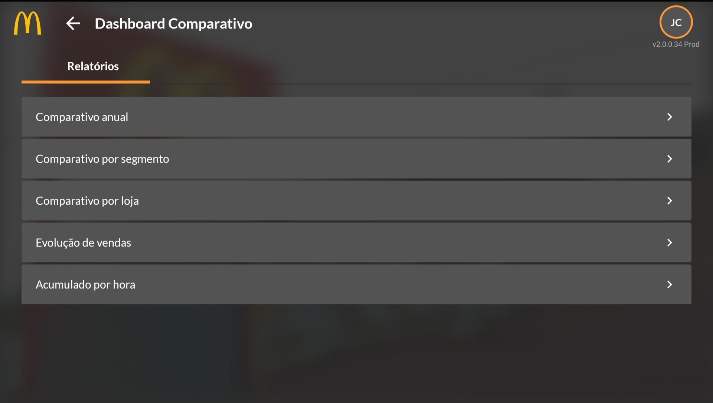
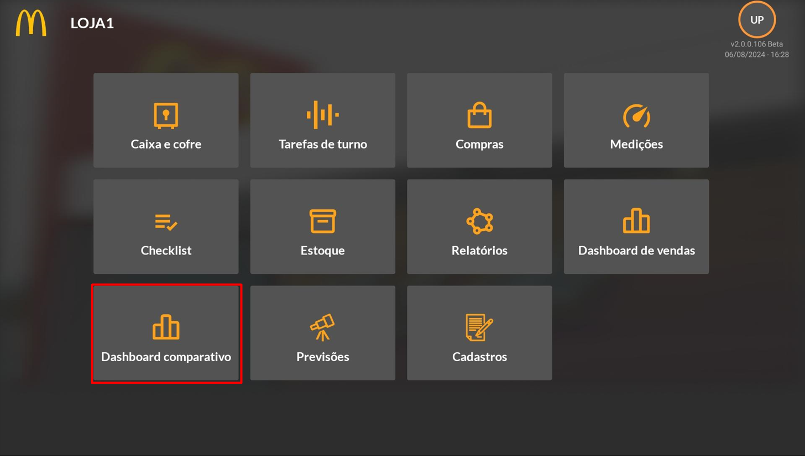
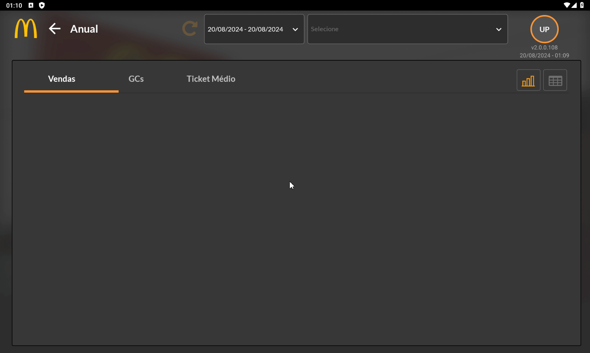
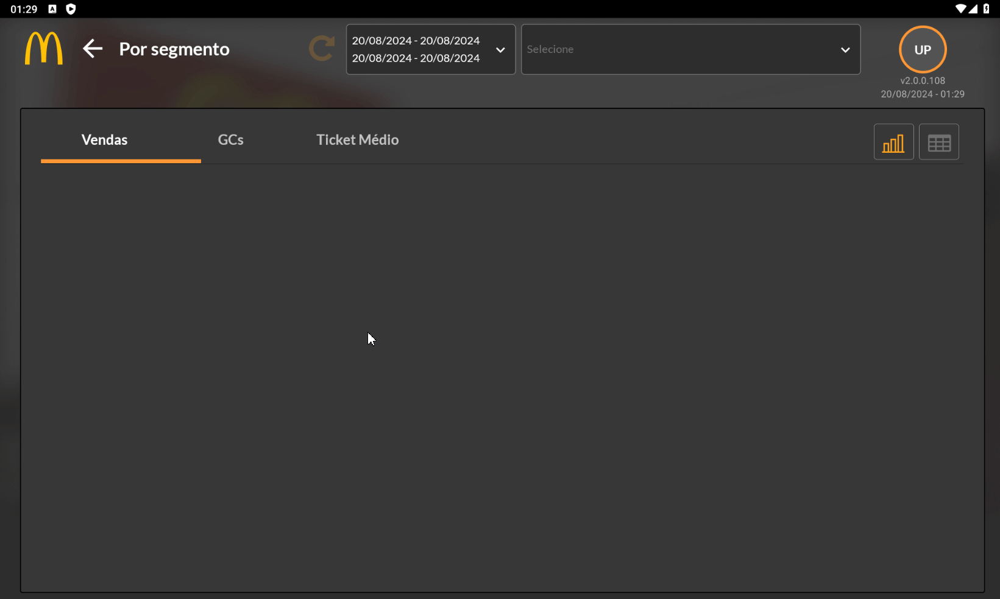
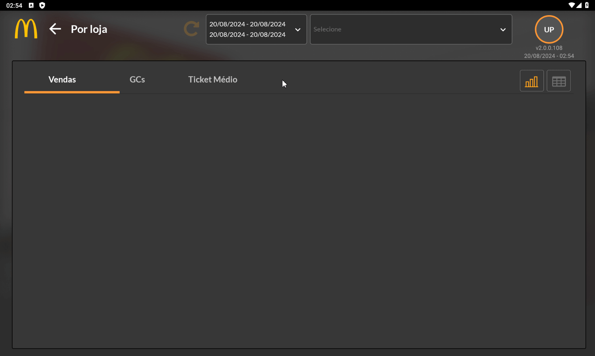
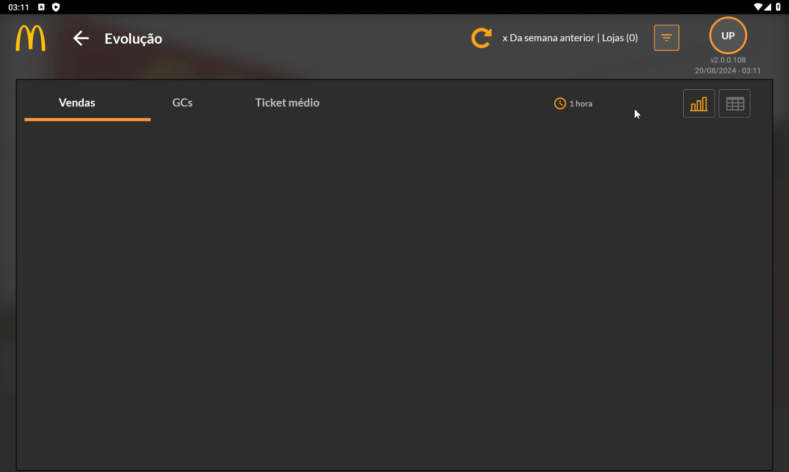

Dashboard Comparativo
Introdução
A função de Dashboard Comparativo faz diversas análises de dados de vendas, guest counts (GC) e ticket médio ™ dependendo do relatório que deseja obter. Ele auxilia o franqueado ou o gestor a verificar o andamento das lojas, sua evolução conforme o tempo e comparar com resultados anteriores a fim de obter uma visão ampla do negócio.
Qual utilidade deste módulo?
É um módulo de representação visual que possibilita gerar gráficos analíticos comparando as informações de valores de vendas, GCs e Ticket médio, entre dois períodos, lojas paralelas e diferentes segmentos. A tela inicial do módulo conta com cinco dashboards diferentes para utilização: comparativo anual, por segmento, por loja, por evolução de vendas e acumulado por hora, como mostra a imagem abaixo.
Acesso ao Módulo
Comparativo Anual
A função do comparativo anual permite que você escolha um determinado período e lojas que deseja comparar as vendas, os GCs e o ticket médio com o mesmo período no ano anterior. O vídeo abaixo mostra todas as telas de visualização dos dados do dashboard.
Por ser um módulo intuitivo, a sua utilização é fácil, ao selecionar os filtros desejados irão aparecer duas barras, a laranja indica o total das vendas, GCs ou Ticket Médio (de acordo com a aba que está aberta) do período escolhido e a barra azul indica o total do período do ano anterior. Há uma opção que mostra os resultados por dia, semana ou mês, além disso é possível trocar a visualização gráfica por uma visualização de dados por tabela. O percentual que é mostrado indica o quanto houve de aumento ou decréscimo no total de vendas, GCs ou ticket médio.
Comparativo por Segmento
O modo de Comparativo por Segmento apresenta a função de comparar as vendas, guest count e ticket médio por segmento dos caixas das lojas (balcão, drive-thru, delivery, NGK e sobremesa) e período indicado.
Sua utilização é semelhante ao do modo de comparativo anual, no entanto não há a opção de visualizar os dados por dia, semana ou mês. Nesta aba são comparados os valores totais de venda, GCs e ticket médio total de todas as lojas com o intervalo de tempo determinado no momento de filtragem, o vídeo abaixo demonstra como é seu funcionamento e as telas de uso.
Após selecionar as lojas que deseja incluir no relatório e o período de comparação, aparecerão duas barras gráficas, a laranja representa o primeiro intervalo escolhido e a barra azul representa o segundo, é possível trocar a forma de visualização por modo de tabela.
Comparativo por Loja
O modo de Comparativo por Loja irá separar os valores totais de vendas, GCs e ticket médio de cada loja selecionada e irá comparar esses valores durante um intervalo de tempo com outro, que foram selecionados no momento inicial de filtro, assim como os outros modos de dashboard comparativo, serão exibidas duas barras para cada período e é possível mudar a visualização dos dados por tabela, o vídeo abaixo demonstra como é a tela de uso de toda a aba deste módulo.
Evolução de Vendas
O modo de Evolução de Vendas apresenta em forma de gráfico de linhas uma comparação de vendas, GCs e ticket médio por determinado dia, mês ou ano, e suas formas de utilização mudam.
No gráfico de comparação diária deve ser escolhido um dia específico da semana que deseja comparar e escolher entre o mesmo dia da semana passada, das últimas três semanas ou o mesmo dia no ano passado. Após selecionar a opção desejada, é possível ver no gráfico a variação das vendas, GCs ou ticket médio em um intervalo de 15 minutos, meia hora ou a cada hora, além disso há o modo de visualização em forma de tabela, assim como demonstrado no vídeo abaixo.

No modo de evolução de vendas por mês, ao escolher o intervalo desejado, será feito uma comparação com o mesmo mês do ano anterior (não há como escolher outro mês ou ano para comparar). Após isso, devem ser selecionadas as lojas que deseja incluir no dashboard. É possível visualizar o gráfico por dia ou semana, e mudar o layout para o formato de tabela. Abaixo há um vídeo demonstrando o uso do módulo.

No modo de evolução de vendas por ano, funciona da mesma forma que a comparação mensal, após escolher o intervalo desejado, será feito uma comparação com o ano anterior, não possuindo a opção de escolher outro intervalo a ser comparado. O vídeo abaixo demonstra a utilização dessa função.
Acumulado por hora
O modo de Acumulado por Hora exibe as informações de vendas, guest counts e ticket médio em um gráfico de barras dentro do intervalo desejado e de acordo com as lojas selecionadas, é possível visualizar os dados acumulados a cada quinze minutos, meia hora ou a cada hora. Além disso, é possível mudar a visualização para o formato de tabela.